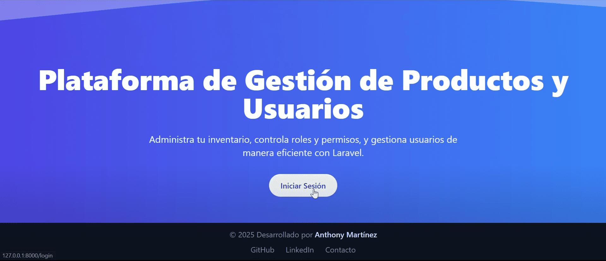

Sistema de Gestión de Productos y Usuarios
Desarrollé una plataforma administrativa completa en Laravel diseñada para optimizar la gestión de productos, usuarios y permisos dentro de una aplicación empresarial. El sistema implementa un control de acceso basado en roles (RBAC) mediante el paquete Spatie Laravel Permission, garantizando una administración segura, escalable y flexible. Además, cuenta con una interfaz moderna, responsive y amigable, construida con TailwindCSS y componentes dinámicos de Blade.